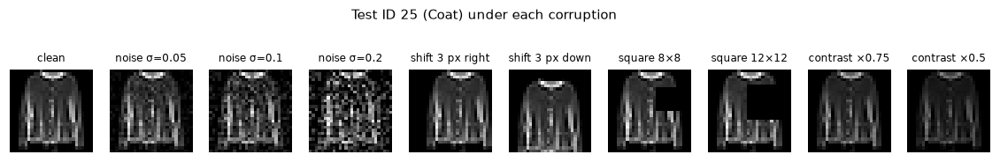
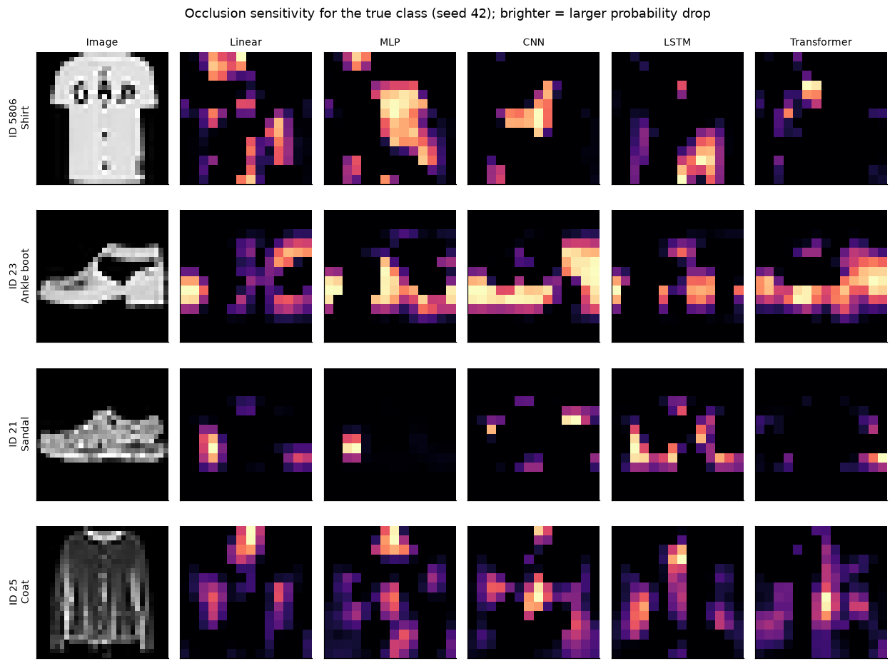

1. Five-seed test errors
This step loads the 25 main runs (five models × seeds 42–46) and the 10,000 test images.
The step trains nothing. The results show confusion matrices, per-class F1 and errors for seed 42 only. Here, each value is an aggregate over seeds 42–46: mean ± sample standard deviation (SD).
| Class | Linear | MLP | CNN | LSTM | Transformer |
|---|---|---|---|---|---|
| T-shirt/top | 0.804 ± 0.006 | 0.838 ± 0.006 | 0.866 ± 0.003 | 0.817 ± 0.006 | 0.819 ± 0.007 |
| Trouser | 0.967 ± 0.002 | 0.981 ± 0.002 | 0.986 ± 0.002 | 0.975 ± 0.002 | 0.977 ± 0.001 |
| Pullover | 0.724 ± 0.009 | 0.806 ± 0.007 | 0.860 ± 0.007 | 0.805 ± 0.010 | 0.788 ± 0.014 |
| Dress | 0.848 ± 0.005 | 0.890 ± 0.005 | 0.912 ± 0.004 | 0.880 ± 0.005 | 0.876 ± 0.004 |
| Coat | 0.746 ± 0.005 | 0.815 ± 0.006 | 0.860 ± 0.005 | 0.804 ± 0.007 | 0.787 ± 0.013 |
| Sandal | 0.928 ± 0.004 | 0.961 ± 0.006 | 0.977 ± 0.005 | 0.965 ± 0.005 | 0.961 ± 0.003 |
| Shirt | 0.599 ± 0.009 | 0.712 ± 0.008 | 0.751 ± 0.007 | 0.679 ± 0.008 | 0.650 ± 0.013 |
| Sneaker | 0.919 ± 0.004 | 0.947 ± 0.006 | 0.961 ± 0.006 | 0.950 ± 0.005 | 0.940 ± 0.003 |
| Bag | 0.937 ± 0.002 | 0.972 ± 0.002 | 0.983 ± 0.001 | 0.970 ± 0.002 | 0.956 ± 0.004 |
| Ankle boot | 0.943 ± 0.003 | 0.956 ± 0.004 | 0.970 ± 0.004 | 0.964 ± 0.003 | 0.953 ± 0.003 |
- Shirt is the weakest class in all 25 runs. Its mean F1 is between 0.599 (Linear) and 0.751 (CNN).
- Trouser is the easiest class, with F1 from 0.967 to 0.986. CNN has the highest mean F1 for all ten classes.
- The SDs are 0.014 or less. Thus, the seed-42 per-class scores were representative.
- Shirt is in three of the five closest class-mean pairs of the EDA (Pullover 0.096, Coat 0.107, T-shirt/top 0.132). In the t-SNE view, Shirt mixes with the other upper-body classes, and Trouser makes a compact group.
Each confusion matrix gives the mean count over the five seeds, rounded to an integer. Rows are the true classes, and columns are the predictions. Each row has 1,000 test images.


| Model | True | Predicted | Count, mean ± SD | Range | Class error rate | In the seed's top five |
|---|---|---|---|---|---|---|
| Linear | Pullover | Coat | 136.0 ± 24.2 | 100–166 | 0.136 | 4/5 |
| Linear | Shirt | T-shirt/top | 130.4 ± 18.1 | 115–160 | 0.130 | 5/5 |
| Linear | T-shirt/top | Shirt | 118.2 ± 22.0 | 86–147 | 0.118 | 4/5 |
| Linear | Pullover | Shirt | 111.6 ± 23.0 | 88–145 | 0.112 | 3/5 |
| Linear | Shirt | Pullover | 105.6 ± 16.5 | 90–126 | 0.106 | 3/5 |
| MLP | Shirt | T-shirt/top | 116.6 ± 32.6 | 84–167 | 0.117 | 5/5 |
| MLP | T-shirt/top | Shirt | 101.2 ± 38.0 | 59–143 | 0.101 | 4/5 |
| MLP | Pullover | Coat | 94.2 ± 22.7 | 70–124 | 0.094 | 4/5 |
| MLP | Coat | Pullover | 76.8 ± 21.1 | 50–106 | 0.077 | 3/5 |
| MLP | Shirt | Pullover | 76.2 ± 6.4 | 67–82 | 0.076 | 3/5 |
| CNN | Shirt | T-shirt/top | 102.8 ± 15.6 | 82–126 | 0.103 | 5/5 |
| CNN | T-shirt/top | Shirt | 88.6 ± 9.5 | 73–98 | 0.089 | 5/5 |
| CNN | Pullover | Shirt | 69.8 ± 11.9 | 53–83 | 0.070 | 4/5 |
| CNN | Coat | Shirt | 61.4 ± 18.2 | 45–91 | 0.061 | 2/5 |
| CNN | Shirt | Coat | 55.4 ± 15.0 | 31–72 | 0.055 | 3/5 |
| LSTM | Shirt | T-shirt/top | 147.0 ± 17.0 | 124–168 | 0.147 | 5/5 |
| LSTM | T-shirt/top | Shirt | 115.2 ± 25.4 | 88–152 | 0.115 | 5/5 |
| LSTM | Coat | Pullover | 96.8 ± 22.0 | 67–117 | 0.097 | 4/5 |
| LSTM | Pullover | Shirt | 80.4 ± 15.9 | 64–104 | 0.080 | 3/5 |
| LSTM | Pullover | Coat | 77.8 ± 22.3 | 60–116 | 0.078 | 1/5 |
| Transformer | Shirt | T-shirt/top | 146.8 ± 37.5 | 108–192 | 0.147 | 5/5 |
| Transformer | Pullover | Coat | 109.2 ± 22.4 | 76–135 | 0.109 | 4/5 |
| Transformer | T-shirt/top | Shirt | 98.6 ± 38.1 | 59–142 | 0.099 | 4/5 |
| Transformer | Shirt | Coat | 90.8 ± 12.8 | 72–105 | 0.091 | 5/5 |
| Transformer | Shirt | Pullover | 85.4 ± 22.6 | 60–118 | 0.085 | 3/5 |
- All 25 directional errors in the table are between the four upper-body classes. Shirt → T-shirt/top is in the top five of each seed for each model (5/5).
- The EDA ranking does not predict the error size. Pullover–Coat has the closest class means (0.088), and it is the largest Linear error (136.0). But T-shirt/top–Shirt is only the fourth closest pair (0.132), and Shirt → T-shirt/top is the largest error for the other four models.
- The CNN top five has no Pullover–Coat pair. All five CNN pairs include Shirt.
- The direction depends on the seed. Single directional counts change much more than the total errors. The MLP T-shirt/top → Shirt count is between 59 and 143. In the seed-42 results, seed 42 has more T-shirt/top → Shirt errors. The five-seed means show the opposite direction.
1.1 Error groups and stable errors
The groups are the same as on the Results page. Upper-body is T-shirt/top, Pullover, Coat and Shirt. Footwear is Sandal, Sneaker and Ankle boot. A stable error is a test image that the model misclassifies in all five seeds.
| Model | All errors | Upper-body | Footwear | Other | Confident (p ≥ 0.9) | Wrong in ≥ 1 seed | Wrong in all 5 seeds | Wrong in all 5 seeds, upper-body |
|---|---|---|---|---|---|---|---|---|
| Linear | 1,583.4 ± 8 | 939 ± 20 (59.3%) | 196 ± 8 (12.4%) | 449 ± 21 (28.3%) | 158 ± 9 (10.0%) | 2,007 | 1,175 | 860 |
| MLP | 1,123.4 ± 26 | 706 ± 15 (62.8%) | 131 ± 13 (11.6%) | 287 ± 14 (25.5%) | 259 ± 43 (23.1%) | 1,836 | 559 | 421 |
| CNN | 874.4 ± 28 | 568 ± 21 (65.0%) | 89 ± 14 (10.2%) | 217 ± 10 (24.8%) | 220 ± 32 (25.1%) | 1,642 | 318 | 242 |
| LSTM | 1,189.4 ± 25 | 757 ± 20 (63.6%) | 114 ± 14 (9.6%) | 318 ± 5 (26.8%) | 158 ± 25 (13.3%) | 1,962 | 595 | 450 |
| Transformer | 1,285.2 ± 39 | 794 ± 29 (61.7%) | 139 ± 7 (10.8%) | 353 ± 20 (27.5%) | 134 ± 12 (10.4%) | 2,260 | 512 | 391 |
- Upper-body confusions are 59.3–65.0% of the errors for each model. Footwear confusions are only 9.6–12.4%. This agrees with the smaller sandal–sneaker mixing in the EDA t-SNE.
- Confident errors (p ≥ 0.9) are 25.1% of the CNN errors and 23.1% of the MLP errors. For Linear, LSTM and Transformer, they are 10.0–13.3%.
- Linear repeats most of its errors: 1,175 of approximately 1,583 per seed are wrong in all 5 seeds. Its convex loss is the likely cause. We did not test this. For CNN, only 318 of approximately 874 errors repeat.
- 146 test images are wrong in all 25 runs. By true class, they are Shirt 48, Pullover 35, T-shirt/top 19, Coat 15, Dress 13, Ankle boot 8, Trouser 3, Bag 3, Sneaker 2 and Sandal 0. The ambiguity is likely in these images, not in one model.
1.2 Gallery images over five seeds
The table counts the seeds that misclassify each test image from the seed-42 galleries in the results.
| Test ID | True class | Linear | MLP | CNN | LSTM | Transformer |
|---|---|---|---|---|---|---|
| 5806, 2856, 9133 6926, 2506 9574 2914 23 | Shirt T-shirt/top Pullover Sneaker Ankle boot | 5/5 | 5/5 | 5/5 | 5/5 | 5/5 |
| 8292 | Sandal | 5/5 | 5/5 | 5/5 | 3/5 | 5/5 |
| 7584 | Sandal | 0/5 | 3/5 | 4/5 | 4/5 | 1/5 |
| 12 | Sneaker | 5/5 | 5/5 | 2/5 | 1/5 | 5/5 |
| 21 | Sandal | 0/5 | 0/5 | 2/5 | 1/5 | 2/5 |
| 25 | Coat | 5/5 | 3/5 | 4/5 | 5/5 | 4/5 |
| 32 | Dress | 0/5 | 0/5 | 2/5 | 0/5 | 0/5 |
| 4167 | Dress | 0/5 | 1/5 | 0/5 | 0/5 | 0/5 |
| 5167 | Coat | 5/5 | 4/5 | 3/5 | 5/5 | 5/5 |
| 8420 | T-shirt/top | 0/5 | 0/5 | 0/5 | 0/5 | 1/5 |
- Eight images are wrong for each model in each seed (first row). Six of them are the six most confident CNN upper-body errors in the seed-42 galleries (#5806 … #9133). The other two are Sneaker #2914 and Ankle boot #23.
- These errors are properties of the images. They agree with the upper-body mixing and the sandal–sneaker mixing in the EDA t-SNE.
- The other gallery errors are seed noise. CNN misclassifies #12, #21 and #32 in only 2/5 seeds. Dress #4167 and T-shirt/top #8420 are wrong in a maximum of 1/5 seeds for each model.
- A single-seed gallery mixes the two types of error. Thus, one gallery cannot separate them.
These errors come from clean test images. The next sections change the test images and measure how each model fails.
2. Noise implementation
Noise occurs in two places: as a test-time corruption in this analysis (Section 3) and as a training-time augmentation (Section 7). This section gives the exact rule for each, from the code.
The EDA shows that 50.2143% of all training pixels are exactly 0. Thus, the background is always black in training. Noise changes this background into grey speckle that no model saw in training. A 3 × 3 filter sees only 9 pixels and a 4 × 4 patch only 16, but a dense layer adds all 784. Thus, noise also tests the inductive bias of each model.
2.1 Test-time noise
The robustness evaluation makes the noisy test images in four steps:
- Scale each test pixel to [0, 1]:
x = pixel / 255, as float32. - Draw
ε ~ N(0, σ²)independently for each pixel. The generator isnp.random.default_rng(0), and the analysis makes it again for each σ. Thus, each σ has one fixed draw, and all models and seeds get the same noisy images. - Add the noise and clip:
x' = clip(x + ε, 0, 1). - Normalize
x'with the training mean and SD that the run saved inbest.pt, as for clean images.
The levels are σ = 0.05, 0.10 and 0.20 on the [0, 1] scale. These are 13, 26 and 51 of 255 grey levels.
2.2 Training-time noise
models/augmented.py adds noise inside the forward() method of each Augmented* model:
- Apply the noise only in training mode (
self.training). Validation and test images stay clean. - Apply the random shift first (Section 7). Then apply the noise to the shifted image.
- For each image, add noise with probability 0.5 (
torch.rand < 0.5). - Draw new noise for each batch with
torch.randn_like.train.pycallsset_seed(torch.manual_seed) with the training seed before each run. The shift, the noise mask and the noise all use this global torch generator. - Use the noise SD 0.10 on the [0, 1] scale. The images are already normalized, so the code uses
0.10 / STD(approximately 0.283).STDis the training SD, 0.3531597432932429. - Clamp the result to
[LOW, HIGH], the normalized values of 0 and 1. The code computesLOWandHIGHin float32, so the background is exactly a normalized 0 pixel.
| Setting | Test-time noise | Training-time noise |
|---|---|---|
| Code | Robustness evaluation | models/augmented.py, augment() |
| Pixel scale | [0, 1], before normalization | Normalized, after the data loader |
| Noise SD | σ = 0.05, 0.10, 0.20 | 0.10 only (0.10 / STD on the normalized scale) |
| Images with noise | All 10,000 test images | Each training image, with probability 0.5 (independent per image) |
| Randomness | One fixed draw per σ, default_rng(0) | A new draw for each batch, from the training seed |
| Range limit | clip(x + ε, 0, 1) | clamp(LOW, HIGH), the same range after normalization |
| Other change | None | Random shift of −2 to 2 px before the noise |
The pixel rule is the same in the two cases: Gaussian noise for each pixel, clipped to the valid range. Only the scale, the level and the randomness are different.
3. Robustness under corruption
This step evaluates the 25 checkpoints on corrupted test images.
- Aim
- Find how the inductive bias of each representation changes the failure when the test images change.
- Hypothesis
- CNN tolerates small shifts better than the flattened-input models. LSTM reads rows in sequence, so it tolerates vertical shifts better than horizontal shifts.
- Fixed
- The 25 checkpoints and their training-split normalization. Noise and squares use fixed random seeds, so each model and seed gets the same images.
- Metric
- Test macro-F1 (%), mean ± SD over seeds. The drop from the clean score is paired by seed. Shift scores are the mean of the four directions.
A corruption is a fixed change to the pixels of a test image before the model gets it. x(i, j) is the pixel in row i and column j, scaled to [0, 1]. The background is 0. The analysis normalizes the corrupted image x' in the same way as a clean image.
| Corruption | Rule for each pixel | Levels | What it imitates |
|---|---|---|---|
| Noise | x' = clip(x + ε, 0, 1), ε ~ N(0, σ²) (Section 2) | σ = 0.05, 0.10, 0.20 | Sensor noise. The black background becomes grey speckle. |
| Shift | x'(i, j) = x(i − dy, j − dx). Pixels that come in from outside are 0. | 1, 2, 3 px up, down, left, right | A garment that is not at the center |
| Occlusion | x' = 0 in one k × k square at a random position (generator seed 1) | k = 8 (8% of the image), 12 (18%) | Part of the garment is hidden |
| Contrast | x' = c · x | c = 0.75, 0.5 | A darker photo. The background stays 0. |
The analysis loaded 500 model × seed × corruption cases. When it computed the scores, each clean score was equal to the value in metrics.json. It saves the scores one time in outputs/robustness_scores.csv, and later runs do not compute them again.


| Corruption | Level | Linear | MLP | CNN | LSTM | Transformer | Best model per seed |
|---|---|---|---|---|---|---|---|
| Clean | – | 84.15 ± 0.11 | 88.77 ± 0.23 | 91.27 ± 0.27 | 88.10 ± 0.21 | 87.06 ± 0.36 | CNN 5/5 |
| Noise | σ = 0.05 | 83.76 ± 0.09 | 88.44 ± 0.23 | 89.58 ± 0.64 | 87.79 ± 0.24 | 86.07 ± 0.28 | CNN 5/5 |
| Noise | σ = 0.10 | 82.85 ± 0.13 | 87.76 ± 0.21 | 84.47 ± 1.37 | 86.62 ± 0.44 | 82.41 ± 0.59 | MLP 5/5 |
| Noise | σ = 0.20 | 80.22 ± 0.64 (−3.92) | 85.21 ± 0.28 (−3.56) | 65.89 ± 3.66 (−25.38) | 77.28 ± 2.98 (−10.82) | 59.88 ± 4.24 (−27.18) | MLP 5/5 |
| Shift | 1 px | 76.00 ± 0.23 | 81.96 ± 0.23 | 88.56 ± 0.18 | 82.92 ± 0.78 | 81.38 ± 1.24 | CNN 5/5 |
| Shift | 2 px | 59.79 ± 0.55 (−24.35) | 65.06 ± 0.98 (−23.71) | 81.08 ± 0.84 (−10.18) | 64.64 ± 1.10 (−23.46) | 68.52 ± 2.34 (−18.54) | CNN 5/5 |
| Shift | 3 px | 42.85 ± 0.82 | 47.41 ± 1.62 | 67.38 ± 1.76 | 51.95 ± 1.32 | 55.51 ± 2.11 | CNN 5/5 |
| Occlusion | 8 × 8 | 76.91 ± 0.22 | 79.90 ± 0.46 | 83.45 ± 0.78 | 77.23 ± 0.63 | 73.17 ± 2.01 | CNN 5/5 |
| Occlusion | 12 × 12 | 66.19 ± 0.31 (−17.95) | 67.20 ± 1.29 (−21.56) | 72.85 ± 1.75 (−18.41) | 62.70 ± 1.44 (−25.41) | 51.27 ± 4.01 (−35.79) | CNN 5/5 |
| Contrast | × 0.75 | 83.05 ± 0.37 | 87.93 ± 0.33 | 90.38 ± 0.30 | 86.61 ± 0.38 | 86.62 ± 0.55 | CNN 5/5 |
| Contrast | × 0.5 | 73.37 ± 1.04 (−10.77) | 81.93 ± 1.63 (−6.84) | 86.66 ± 1.17 (−4.61) | 80.44 ± 0.89 (−7.66) | 83.44 ± 0.41 (−3.62) | CNN 5/5 |
The table that follows splits each shift level by axis.
| Shift | Axis | Linear | MLP | CNN | LSTM | Transformer |
|---|---|---|---|---|---|---|
| 1 px | Horizontal | 74.67 | 80.88 | 88.58 | 80.27 | 80.62 |
| 1 px | Vertical | 77.33 | 83.04 | 88.55 | 85.57 | 82.15 |
| 2 px | Horizontal | 51.92 | 57.97 | 79.74 | 48.90 | 62.70 |
| 2 px | Vertical | 67.66 | 72.15 | 82.42 | 80.39 | 74.34 |
| 3 px | Horizontal | 29.18 | 34.97 | 58.86 | 27.93 | 44.11 |
| 3 px | Vertical | 56.52 | 59.85 | 75.90 | 75.96 | 66.92 |
- CNN is the most robust model for shifts, occlusion and decreased contrast in all five seeds.
- Noise reverses the ranking. From σ = 0.10, MLP is best in all five seeds (87.76 against 84.47 for CNN). At σ = 0.20, Transformer loses 27.18 points and CNN 25.38, but Linear and MLP lose less than 4. Noise changes the black background (Section 2) into grey speckle. A 3 × 3 filter or a 4 × 4 patch can react to local speckle, but a dense layer averages over all 784 pixels. We did not test this.
- Shifts cause large drops for flattened inputs. A 2-pixel shift costs Linear 24.35 points, MLP 23.71 and LSTM 23.46, but CNN only 10.18. The EDA mean image shows where clothing usually is in the frame. A model that connects each weight to one pixel position likely uses that fixed position.
- LSTM follows its row design. A vertical 3-pixel shift only moves rows in the sequence. LSTM keeps 75.96%, close to CNN (75.90%). A horizontal shift changes each row vector, and LSTM falls to 27.93%, the lowest of all models.
- Contrast causes the largest drop for Linear (10.77) and the smallest for Transformer (3.62). Half contrast keeps the background at 0 but scales the garment. The Linear score is a weighted sum of raw intensities, so it likely changes with brightness. The EDA shows that brightness is different between classes. The layer normalization in the Transformer can remove the scale (not tested).
- Transformer is the least stable. It loses 35.79 points under 12 × 12 occlusion, and it has the largest seed SDs (up to 4.24).
The next section looks inside the models to find the pixels and rows that each model uses.
4. Interpretability
This step applies three methods to the 25 checkpoints:
- Occlusion sensitivity (all models): 300 test images (30 for each class, sampled with seed 0). A 4 × 4 patch is set to the background value at stride 2 (169 positions). The value of each pixel is the mean drop in true-class probability over the patches that cover it.
- LSTM row probe: the trained classifier reads the hidden state after each row on the full test set. Nothing is trained again.
- Transformer attention: the analysis computes the attention weights of the two layers again from the encoder. A check against
forward()confirms them.
| Model | Seed agreement r | Images | Half-mass pixels (%) | Top, rows 0–8 (%) | Middle, rows 9–18 (%) | Bottom, rows 19–27 (%) |
|---|---|---|---|---|---|---|
| Linear | 0.97 ± 0.02 | 297 | 7.3 ± 0.2 | 43.3 ± 1.0 | 30.6 ± 0.8 | 26.1 ± 0.5 |
| MLP | 0.76 ± 0.02 | 247 | 5.3 ± 0.1 | 42.6 ± 0.7 | 26.6 ± 0.8 | 30.8 ± 0.7 |
| CNN | 0.56 ± 0.02 | 264 | 5.8 ± 0.3 | 32.4 ± 2.1 | 36.4 ± 2.9 | 31.2 ± 3.8 |
| LSTM | 0.57 ± 0.02 | 300 | 6.0 ± 0.2 | 44.9 ± 2.3 | 22.8 ± 1.5 | 32.3 ± 2.5 |
| Transformer | 0.46 ± 0.02 | 300 | 8.3 ± 0.3 | 36.0 ± 1.3 | 36.3 ± 1.6 | 27.7 ± 1.0 |
The Images column gives the number of images in the seed-agreement correlation. A fully confident model gives a flat map, so the correlation skips images that are flat in one or more seeds.


- Explanations depend on the seed. Linear maps are almost identical between seeds (r = 0.97). CNN, LSTM and Transformer agree only at r = 0.46–0.57. This agrees with Section 1: Linear repeats its errors between seeds, but the other models change their errors. Thus, a map from one seed does not show the reasoning of the model family. MLP and CNN are fully confident on some images and give flat maps, so we excluded those images.
- Upper-body evidence is at the top. For upper-body garments, Linear, MLP and LSTM put 42.6–44.9% of their positive evidence in the top third (rows 0–8: collar, shoulders, sleeves). CNN puts 32.4% there and Transformer 36.0%. The EDA says that necklines and openings separate the close upper-body pairs, but these details can be small at 28 × 28. This can be one reason why Shirt stays the weakest class.
- Concentration. Half of the evidence is in 5.3% of the pixels for MLP and in 8.3% for Transformer. Pixel-specific evidence agrees with the large shift drops for flattened models in Section 3.
- Example. All runs misclassify Ankle boot #23. For this image, most models use the sole and the edges of the toe and heel. A sandal can also have these parts (not tested).
4.1 LSTM row probe
The probe measures the LSTM accuracy after each number of rows and the row where each prediction becomes final.
| Rows read | Accuracy (%) |
|---|---|
| 7 | 20.78 ± 2.97 |
| 14 | 39.84 ± 2.09 |
| 18 | 54.91 ± 2.94 |
| 21 | 68.89 ± 2.17 |
| 24 | 82.59 ± 0.49 |
| 26 | 85.82 ± 0.31 |
| 28 | 88.11 ± 0.25 |
| Class | Row where the prediction becomes final | Seed range |
|---|---|---|
| Bag | 10.8 | 8–13 |
| Dress | 11.2 | 7–13 |
| Trouser | 12.4 | 11–13 |
| Sandal | 16.2 | 10–20 |
| Ankle boot | 17.6 | 12–22 |
| Coat | 18.3 | 17–20 |
| Pullover | 19.6 | 18–21 |
| T-shirt/top | 20.0 | 19–21 |
| Sneaker | 22.2 | 21–23 |
| Shirt | 23.4 | 22–24 |
- LSTM decides late. The accuracy is 39.84% after 14 rows (half of the image). LSTM gets its test accuracy (88.11%) only after row 28.
- Bag, Dress and Trouser become final after approximately 11–12 rows. Their outline is likely visible early. This agrees with the compact Trouser group in the EDA t-SNE.
- Shirt becomes final last (row 23.4). This agrees with Section 1: Shirt is the weakest LSTM class, and Shirt → T-shirt/top is its largest error. The cue that separates Shirt can be in the lower rows only. We did not test this.
- The classifier trained only on the last hidden state. Thus, the early readings show less than the hidden state contains.
4.2 Transformer attention
The attention statistics measure how local and how selective each layer is.
| Layer | Mean distance (patches) | Entropy | Lowest head entropy | Uniform distance (patches) |
|---|---|---|---|---|
| 1 | 3.57 ± 0.04 | 0.870 ± 0.023 | 0.819 | 3.609 |
| 2 | 3.63 ± 0.05 | 0.488 ± 0.027 | 0.409 | 3.609 |
| Band | Rollout weight (%) | Area share (%) |
|---|---|---|
| Top 2 patch rows | 30.5 ± 0.8 | 28.6 |
| Middle 3 | 41.4 ± 0.5 | 42.9 |
| Bottom 2 | 28.1 ± 0.6 | 28.6 |
- Layer 1 attention is almost uniform (entropy 0.870). Layer 2 is more selective (0.488), but its mean attention distance (3.63 patches) is not shorter than that of uniform attention (3.609).
- Rollout gives each band almost its area share (top 30.5% against 28.6%). This agrees with the occlusion maps: Transformer puts 36.0% of its evidence in the top third, less than Linear, MLP and LSTM.
- These statistics do not show local attention like the fixed locality of CNN filters. The mean-pooled output is almost an average of patch features.
- Link to Section 3. With almost uniform mixing, one corrupted patch can change all patches. This can explain the large drops under noise (27.18) and 12 × 12 occlusion (35.79). It can also explain the low seed agreement (r = 0.46). We did not test these links.
Sections 5–7 use more runs to test these findings. The same train.py trained them, and evaluate.py evaluated them with the same protocol. The Run history lists these runs.
5. LSTM and GRU
This step replaces the LSTM cell with a GRU cell and keeps all other settings.
GRU removes the LSTM cell state and keeps one hidden state. A reset gate sets how much of the previous state goes into the candidate. An update gate u mixes the two: h_t = (1 − u_t) ⊙ h̃_t + u_t ⊙ h_{t−1}. When u ≈ 1, the model copies the state forward, as the LSTM forget path does (RNN slides, Sections 4–5). models/gru.py replaces nn.LSTM with nn.GRU and changes nothing else: 28 rows of 28 pixels, hidden size 64.
- Hypothesis
- With 24% fewer parameters (18,698 against 24,714), GRU gets the same score as LSTM, and it has the same row-order robustness.
- Note
- We do not compare the training and inference times of these runs.
| Model | Parameters | Validation macro-F1 (%) | Test macro-F1 (%) | Test median (%) | Selected epochs (seeds 42–46) | Paired gap (pp) | GRU better |
|---|---|---|---|---|---|---|---|
| LSTM | 24,714 | 89.80 ± 0.11 | 88.10 ± 0.21 | 88.11 | 13, 16, 15, 13, 14 | – | – |
| GRU | 18,698 | 90.32 ± 0.14 | 88.88 ± 0.20 | 88.81 | 16, 16, 14, 15, 16 | +0.78 [0.55, 1.36] | 5/5 |
| Model | Clean | Noise σ = 0.20 | Shift 2 px horizontal | Shift 2 px vertical | Square 12 × 12 | Contrast × 0.5 |
|---|---|---|---|---|---|---|
| LSTM | 88.10 ± 0.21 | 77.28 ± 2.98 | 48.90 ± 1.88 | 80.39 ± 0.46 | 62.70 ± 1.44 | 80.44 ± 0.89 |
| GRU | 88.88 ± 0.20 | 81.99 ± 0.91 | 53.00 ± 3.63 | 81.68 ± 0.26 | 63.50 ± 0.73 | 83.01 ± 0.93 |
| Rows read | 7 | 14 | 18 | 21 | 24 | 28 |
|---|---|---|---|---|---|---|
| LSTM | 20.78 ± 2.97 | 39.84 ± 2.09 | 54.91 ± 2.94 | 68.89 ± 2.17 | 82.59 ± 0.49 | 88.11 ± 0.25 |
| GRU | 19.37 ± 3.28 | 41.39 ± 3.03 | 58.21 ± 1.84 | 73.16 ± 1.28 | 83.22 ± 0.54 | 88.96 ± 0.19 |
- GRU is better than LSTM with fewer parameters. GRU gets 88.88 ± 0.20 and LSTM 88.10 ± 0.21. The gap is +0.78 pp, GRU is better in 5/5 seeds, and the smallest paired gap is 0.55 pp. The gap is larger than the two seed SDs, so the data supports the difference. GRU has 18,698 parameters and LSTM has 24,714. Thus, the "same score" part of the hypothesis is false, and the result is better for GRU.
- GRU can be under-trained. GRU selects epoch 16 in 3/5 seeds, and LSTM in 1/5. GRU also has the higher validation score (90.32 against 89.80). One possible cause: GRU optimizes faster in the fixed 16-epoch budget. The update gate can act as a gated skip (
u ≈ 1copiesh), and this gives a short gradient path over 28 steps. We did not test this mechanism. The slides say that the better cell depends on the task and the dataset, so this result applies only to this setup. - GRU keeps the LSTM row-order asymmetry. Under a 2-pixel vertical shift, GRU keeps 81.68 ± 0.26. A horizontal shift decreases GRU to 53.00 ± 3.63. LSTM shows the same pattern (80.39 against 48.90). A vertical shift moves rows in the sequence, and a horizontal shift changes each row vector (Section 3). The cell type does not remove this weakness.
- GRU is a little more robust, with one exception. The gaps over LSTM are larger than the seed SDs under noise σ = 0.20 (81.99 ± 0.91 against 77.28 ± 2.98), horizontal shift, vertical shift and contrast × 0.5 (83.01 against 80.44). Under the 12 × 12 square (63.50 ± 0.73 against 62.70 ± 1.44), the gap is smaller than the SD, so the data does not support it.
- GRU also decides late, but it collects evidence earlier. After 7 rows, the accuracy difference is not supported (19.37 against 20.78). After 18 and 21 rows, GRU is better (58.21 against 54.91, 73.16 against 68.89), and these gaps are larger than the SDs. At row 14 (41.39 against 39.84), the gap is smaller than the SD.
The cell type does not change the row-order weakness. The next section changes the input order.
6. Representation ablation
This step gives the same architecture the same image, but cut in a different way. The encoder and the training settings are fixed. The number of tokens, the token size and the input projection change with the cut, so TransformerRows has 19,242 parameters against 19,530. The classes are in models/lstm.py and models/transformer.py.
| Model | Input sequence | Parameters | Validation macro-F1 (%) | Test macro-F1 (%) | Test median (%) | Selected epochs (seeds 42–46) | Paired gap (pp) | Variant better |
|---|---|---|---|---|---|---|---|---|
| LSTM | Rows, top to bottom: 28 tokens × 28 | 24,714 | 89.80 ± 0.11 | 88.10 ± 0.21 | 88.11 | 13, 16, 15, 13, 14 | – | – |
| LSTMColumns | Columns, left to right: 28 tokens × 28 | 24,714 | 88.84 ± 0.22 | 87.36 ± 0.23 | 87.37 | 16, 16, 15, 14, 15 | −0.75 [−1.26, −0.41] | 0/5 |
| Transformer | 4 × 4 patches: 49 tokens × 16 | 19,530 | 88.48 ± 0.33 | 87.06 ± 0.36 | 87.00 | 16, 16, 15, 16, 16 | – | – |
| TransformerPatch7 | 7 × 7 patches: 16 tokens × 49 | 19,530 | 88.47 ± 0.43 | 86.80 ± 0.43 | 86.98 | 15, 15, 16, 16, 15 | −0.26 [−1.07, 0.38] | 2/5 |
| TransformerRows | Rows: 28 tokens × 28 | 19,242 | 89.91 ± 0.29 | 88.44 ± 0.31 | 88.40 | 15, 15, 13, 16, 14 | +1.38 [0.59, 1.92] | 5/5 |
| Model | Clean | Noise σ = 0.20 | Shift 2 px horizontal | Shift 2 px vertical | Square 12 × 12 | Contrast × 0.5 |
|---|---|---|---|---|---|---|
| LSTM | 88.10 ± 0.21 | 77.28 ± 2.98 | 48.90 ± 1.88 | 80.39 ± 0.46 | 62.70 ± 1.44 | 80.44 ± 0.89 |
| LSTMColumns | 87.36 ± 0.23 | 72.59 ± 2.46 | 80.74 ± 1.63 | 71.68 ± 1.14 | 54.72 ± 0.66 | 80.96 ± 0.61 |
| Transformer | 87.06 ± 0.36 | 59.88 ± 4.24 | 62.70 ± 3.40 | 74.34 ± 1.66 | 51.27 ± 4.01 | 83.44 ± 0.41 |
| TransformerPatch7 | 86.80 ± 0.43 | 69.89 ± 1.26 | 54.96 ± 1.92 | 72.31 ± 1.13 | 64.98 ± 1.30 | 82.04 ± 1.84 |
| TransformerRows | 88.44 ± 0.31 | 78.62 ± 1.32 | 53.67 ± 0.54 | 79.54 ± 0.39 | 62.25 ± 2.12 | 83.95 ± 1.23 |
- Rows are better than columns for LSTM. LSTMColumns gets 87.36 ± 0.23. This is −0.75 pp below LSTM, and it is better in 0/5 seeds. The gap is larger than the SDs, so the data supports the difference. LSTMColumns also loses more under noise σ = 0.20 (72.59 against 77.28) and the 12 × 12 square (54.72 against 62.70). One likely cause: a row is a full horizontal profile, for example sleeve width, the gap between trouser legs or a flat shoe sole (EDA: the two-leg silhouette of trousers, the horizontal silhouette of footwear). If garments are approximately symmetric left to right, a column sequence reads two almost equal copies of the same profile. We did not test these two ideas.
- The shift asymmetry reverses, as the prediction says. LSTMColumns keeps 80.74 ± 1.63 under a 2-pixel horizontal shift, but only 71.68 ± 1.14 under a vertical shift. LSTM gets 48.90 and 80.39. The cell, the parameters and the training are the same. Thus, the sequence direction, not the cell type, sets which shift causes damage. A shift along the sequence moves tokens in time. A shift across the sequence changes each token. GRU (Section 5) gives the same result from the other side.
- Larger patches: clean difference not supported, robustness changes. TransformerPatch7 is −0.26 pp in clean macro-F1 (better in 2/5 seeds, SD up to 0.43). Thus, the clean difference is not supported. TransformerPatch7 is much more stable under noise (69.89 ± 1.26 against 59.88 ± 4.24) and the 12 × 12 square (64.98 ± 1.30 against 51.27 ± 4.01). It is weaker under horizontal shift (54.96 against 62.70). A 49-pixel token likely averages per-pixel noise better than a 16-pixel token. We did not test this mechanism.
- Row tokens are the best Transformer input. TransformerRows is +1.38 pp over Transformer in 5/5 seeds (88.44 ± 0.31), with fewer parameters (19,242). It is also above LSTM (88.10 ± 0.21), but the gap only just passes the criterion. Approximately half of all training pixels are 0 (EDA). Thus, many 4 × 4 patches contain mostly background, but each row token holds a full profile. Section 4 showed almost uniform attention and a mean-pooled output, so the Transformer mostly averages its tokens. An average of informative row tokens is likely better than an average of patch tokens that are mostly background. This is a hypothesis.
- Row tokens also bring the row weakness. TransformerRows is strong under noise (78.62 ± 1.32), vertical shift (79.54 ± 0.39) and the 12 × 12 square (62.25 against 51.27). Under horizontal shift, it falls to 53.67 ± 0.54. This is near LSTM (48.90) and below the 4 × 4 Transformer (62.70). The token geometry, not attention or recurrence, sets this trade-off. No representation here is robust on the two shift axes. Only CNN is near this (Section 3).
No input representation removes the shift weakness. The next section changes the training images.
7. Shift and noise augmentation
This step trains all five models again with random shifts and noise on the training images. Section 3 showed two weaknesses: flattened models fail under shifts, and CNN and Transformer fail under noise. models/augmented.py changes each training image each time the loader draws it. Validation, test and checkpoint selection use clean images.
| Setting | Test-time corruption | Training-time augmentation |
|---|---|---|
| Shift | Fixed 1, 2 or 3 px in one direction | Always: random integer dy, dx in {−2, …, 2} px. 24 of 25 draws move the image. |
| Noise | σ = 0.05, 0.10, 0.20 on each test image, one fixed draw (seed 0) | σ = 0.10 on each training image with probability 0.5, a new draw for each batch |
- Name: this is shift and noise augmentation, not training with noise only. The two changes occur together, so we cannot separate their effects.
- Aim: measure how much of each weakness the augmentation removes, and its cost on clean test images.
- Note: σ = 0.10 is the training level. σ = 0.20 tests two times that level.
| Model | Parameters | Validation macro-F1 (%) | Test macro-F1 (%) | Test median (%) | Selected epochs (seeds 42–46) | Paired gap (pp) | Augmented better |
|---|---|---|---|---|---|---|---|
| AugmentedLinear | 7,850 | 80.36 ± 0.15 | 78.49 ± 0.24 | 78.56 | 15, 9, 16, 11, 16 | −5.66 [−5.98, −5.47] | 0/5 |
| AugmentedMLP | 203,530 | 88.28 ± 0.13 | 86.78 ± 0.21 | 86.84 | 16, 14, 15, 15, 15 | −1.98 [−2.37, −1.58] | 0/5 |
| AugmentedCNN | 105,866 | 91.43 ± 0.32 | 90.35 ± 0.25 | 90.41 | 16, 15, 15, 13, 16 | −0.92 [−1.17, −0.60] | 0/5 |
| AugmentedLSTM | 24,714 | 87.91 ± 0.19 | 86.48 ± 0.46 | 86.63 | 15, 16, 16, 12, 14 | −1.62 [−2.27, −1.39] | 0/5 |
| AugmentedTransformer | 19,530 | 85.07 ± 0.63 | 84.03 ± 0.69 | 84.40 | 16, 15, 16, 16, 16 | −3.03 [−3.95, −2.32] | 0/5 |
| Model | Clean | Noise σ = 0.05 | Noise σ = 0.10 | Noise σ = 0.20 | Shift 2 px horizontal | Shift 2 px vertical | Square 12 × 12 | Contrast × 0.5 |
|---|---|---|---|---|---|---|---|---|
| Linear | 84.15 ± 0.11 | 83.76 ± 0.09 | 82.85 ± 0.13 | 80.22 ± 0.64 | 51.92 ± 1.02 | 67.66 ± 0.44 | 66.19 ± 0.31 | 73.37 ± 1.04 |
| AugmentedLinear | 78.49 ± 0.24 | 78.01 ± 0.25 | 77.24 ± 0.11 | 74.92 ± 0.24 | 75.88 ± 0.36 | 74.86 ± 0.30 | 51.33 ± 0.51 | 57.77 ± 2.56 |
| MLP | 88.77 ± 0.23 | 88.44 ± 0.23 | 87.76 ± 0.21 | 85.21 ± 0.28 | 57.97 ± 1.69 | 72.15 ± 0.30 | 67.20 ± 1.29 | 81.93 ± 1.63 |
| AugmentedMLP | 86.78 ± 0.21 | 86.63 ± 0.21 | 86.23 ± 0.15 | 84.70 ± 0.14 | 85.76 ± 0.10 | 84.77 ± 0.30 | 61.56 ± 0.70 | 78.91 ± 1.77 |
| CNN | 91.27 ± 0.27 | 89.58 ± 0.64 | 84.47 ± 1.37 | 65.89 ± 3.66 | 79.74 ± 1.56 | 82.42 ± 0.43 | 72.85 ± 1.75 | 86.66 ± 1.17 |
| AugmentedCNN | 90.35 ± 0.25 | 89.95 ± 0.19 | 88.93 ± 0.25 | 82.70 ± 1.08 | 89.51 ± 0.02 | 89.05 ± 0.30 | 70.48 ± 0.31 | 83.59 ± 1.35 |
| LSTM | 88.10 ± 0.21 | 87.79 ± 0.24 | 86.62 ± 0.44 | 77.28 ± 2.98 | 48.90 ± 1.88 | 80.39 ± 0.46 | 62.70 ± 1.44 | 80.44 ± 0.89 |
| AugmentedLSTM | 86.48 ± 0.46 | 86.35 ± 0.49 | 85.99 ± 0.51 | 83.32 ± 0.88 | 85.51 ± 0.50 | 85.21 ± 0.55 | 58.63 ± 1.26 | 79.37 ± 0.54 |
| Transformer | 87.06 ± 0.36 | 86.07 ± 0.28 | 82.41 ± 0.59 | 59.88 ± 4.24 | 62.70 ± 3.40 | 74.34 ± 1.66 | 51.27 ± 4.01 | 83.44 ± 0.41 |
| AugmentedTransformer | 84.03 ± 0.69 | 83.67 ± 0.59 | 82.81 ± 0.55 | 76.91 ± 1.91 | 83.09 ± 0.74 | 82.27 ± 0.85 | 48.74 ± 3.65 | 79.30 ± 1.64 |
- Augmentation costs clean accuracy in each seed. Clean test macro-F1 decreases for all five models in 5/5 seeds. CNN has the smallest cost (−0.92 pp) and Linear the largest (−5.66 pp). The other costs are LSTM −1.62, MLP −1.98 and Transformer −3.03.
- The cost follows the inductive bias. Convolution and pooling already tolerate small shifts, so CNN pays the least. Linear has one fixed weight for each pixel and cannot represent shift invariance. Thus, it must spread one template over many positions. We did not test this mechanism.
- The shift weakness is gone. For a horizontal 2 px shift, LSTM goes from 48.90 to 85.51, MLP from 57.97 to 85.76 and Linear from 51.92 to 75.88. AugmentedCNN keeps 89.51 ± 0.02 under a horizontal shift and 89.05 under a vertical shift, near its clean 90.35. The LSTM row asymmetry also goes away: 85.51 horizontal against 85.21 vertical.
- Noise robustness improves where it was weak. At σ = 0.20, two times the training σ, CNN goes from 65.89 to 82.70, Transformer from 59.88 to 76.91 and LSTM from 77.28 to 83.32. Linear (80.22 → 74.92) and MLP (85.21 → 84.70) were already robust to noise, and they lose a little.
- Occlusion and contrast become worse for all five models. With a 12 × 12 square, Linear goes from 66.19 to 51.33 and CNN from 72.85 to 70.48. With contrast × 0.5, Linear goes from 73.37 to 57.77 and CNN from 86.66 to 83.59. The gain applies only to the corruptions in training. Part of each decrease comes from the lower clean score. But the Linear contrast decrease is much larger than its clean decrease.
- Training noise makes the background grey, and shifts move the garment. The models can learn to treat faint pixels as noise. Thus, a darker garment can look like noise, and the contrast score can decrease. We did not test this mechanism.
- The value depends on the deployment. The test set is clean, so the clean cost is real. The robustness gain is important only if real images have shifts or noise. AugmentedCNN is still the best augmented model on clean images (90.35).
- The 16-epoch budget can be too short. 11 of 25 augmented runs select epoch 16, and AugmentedTransformer does this in 4 of 5 seeds. Part of the clean cost can come from the budget. We did not test this.
- Note.
metrics.jsonfor these runs records"augmentation": null, becausetrain.fitwrites a fixed value. The real augmentation is the one inmodels/augmented.py.
8. Summary
The table gives the main result of each section.
| Topic | Result | Evidence (section) |
|---|---|---|
| Best model | CNN: 91.27 ± 0.27 macro-F1, the best F1 in all ten classes, better than each other model in 5/5 seeds. It stays best at approximately 25k parameters (90.51, above the full MLP at 88.77). Its larger parameter count does not explain the lead. | §1; results: seed variability and matched-budget ablation |
| Hardest class | Shirt is the weakest class in all 25 runs (F1 0.599 for Linear to 0.751 for CNN). Upper-body confusions are 59–65% of the errors. 146 images are wrong in all 25 runs, and 48 of them are Shirts. The difficulty is in the data, not in one model. | §1 |
| Failure under corruption | CNN is the most robust under shift, occlusion and contrast in 5/5 seeds. Noise reverses the ranking: from σ = 0.10, MLP is best. At σ = 0.20, CNN and Transformer lose more than 25 pp. LSTM keeps 75.96 under a 3 px vertical shift, but only 27.93 under a horizontal shift. | §2, §3 |
| Interpretability | Explanations depend on the seed: Linear maps agree at r = 0.97, and CNN, LSTM and Transformer only at 0.46–0.57. LSTM decides late (39.84% after 14 rows; Shirt becomes final last, row 23.4). Transformer layer-2 attention is not shorter-range than uniform attention (3.63 patches against 3.609). | §4 |
| GRU and LSTM | GRU is better by +0.78 pp in 5/5 seeds with 24% fewer parameters (18,698 against 24,714). Its mean is above LSTM under each corruption in the table, for example noise σ = 0.20: 81.99 against 77.28. The 12 × 12 square gap is not supported. | §5 |
| Input representation | The cut of the image matters. Columns reverse the LSTM asymmetry: horizontal 2 px 48.90 → 80.74, vertical 80.39 → 71.68. TransformerRows gains +1.38 pp in 5/5 seeds. For TransformerPatch7, the clean macro-F1 difference is not supported (−0.26, 2/5), but it is better under occlusion (64.98 against 51.27). | §6 |
| Augmentation trade-off | Clean macro-F1 decreases in 5/5 seeds, by −0.92 (CNN) to −5.66 (Linear). Shift and noise robustness increase strongly (CNN noise 65.89 → 82.70). Occlusion and contrast × 0.5 become worse for all models. | §7 |
8.1 EDA predictions and results
The EDA found the closest class means among Pullover, Coat and Shirt, and t-SNE mixed these classes. The models confirm this: upper-body errors are the largest group, and Shirt is always the weakest class. But the most frequent error is Shirt → T-shirt/top, and this pair is only the fourth closest in the EDA (RMS 0.132).
The EDA did not test robustness, but two of its facts agree with the failures. First, approximately half of all pixels are exactly 0, so noise changes a large area that is background in training. Second, the mean image shows a fixed region where clothing usually is, and flattened models can use that region. These links are hypotheses, and we did not test them.
8.2 Limitations
- All results come from one training/validation split, five seeds and a fixed 16-epoch budget. Transformer and many augmented runs select the last epoch, so they can be under-trained.
- The corruptions are synthetic and use fixed random seeds. We did not test the stated mechanisms, for example dense averaging against noise, attention range and the contrast loss after augmentation.